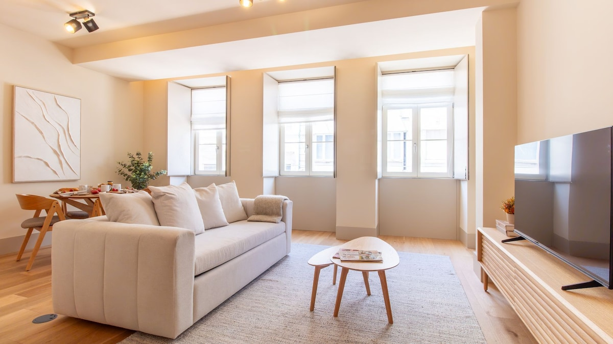
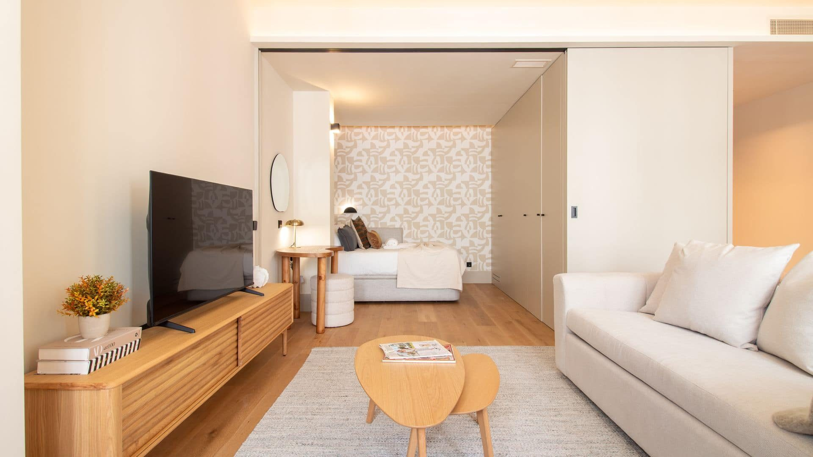
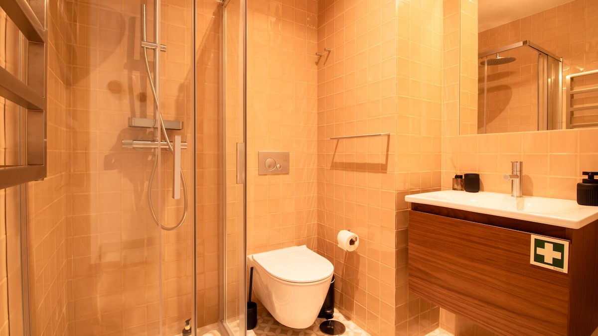
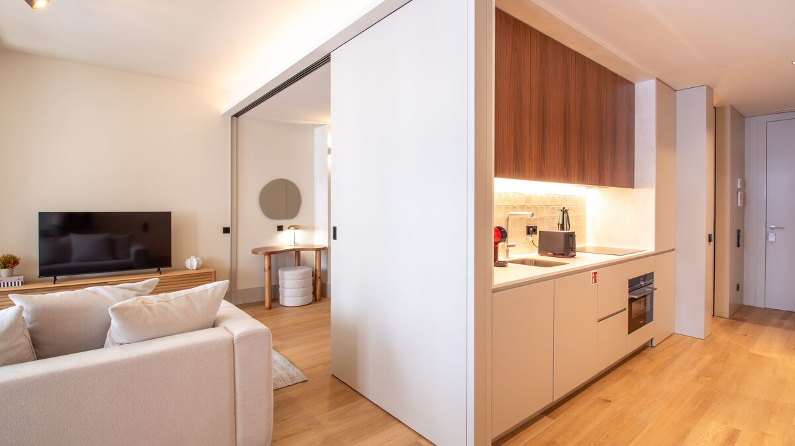
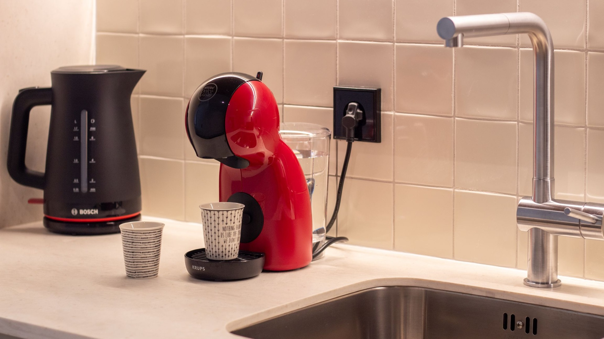
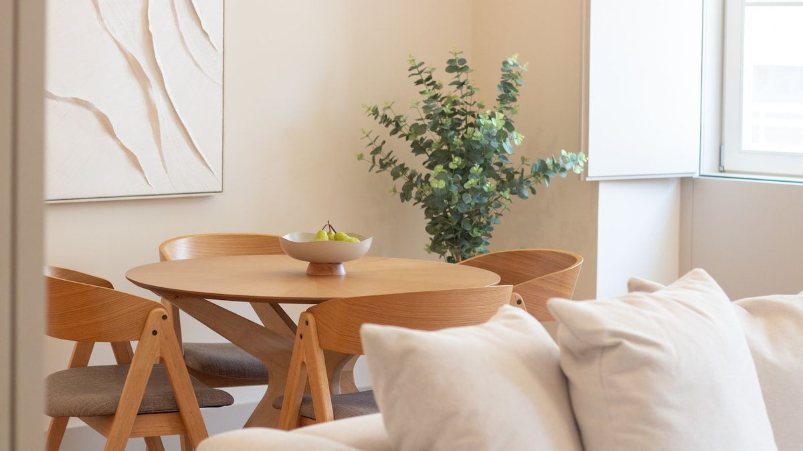
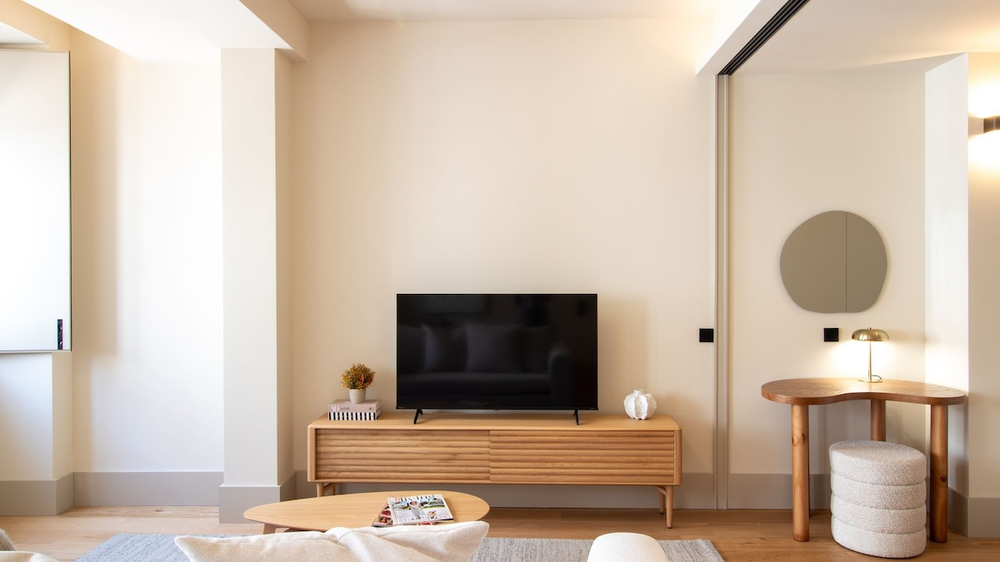
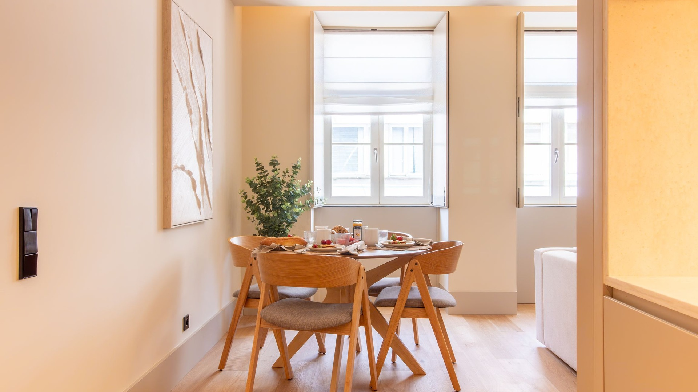
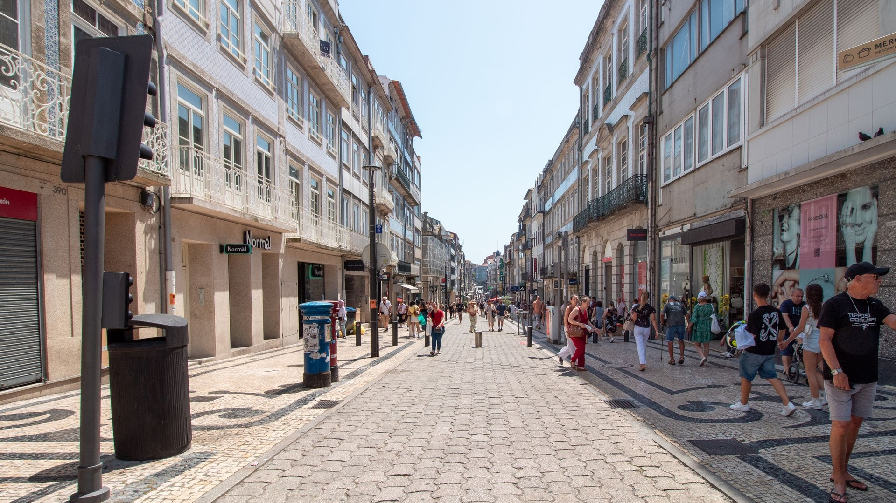
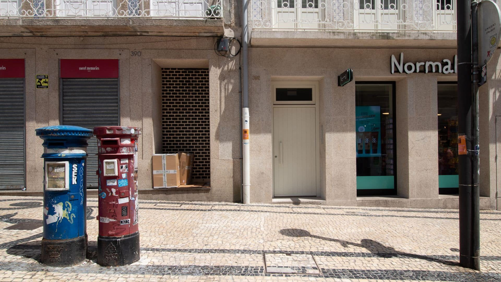

Rua de Santa Catarina 392, Porto
A bright 56 m² apartment directly on Porto's pedestrian shopping street, with tall windows over the street life, an open-plan kitchen, a quiet sleeping area, and everything for a short or long stay.
Check dates and book on AirbnbRated 4.78 from 18 stays on Airbnb (October 2026) · Guest favourite · Superhost










Rua de Santa Catarina 392, in the Santo Ildefonso district of central Porto. The street is pedestrian-only here, lined with shops and cafes, a short walk from Bolhao Market, the Capela das Almas tiled chapel and Bolhao metro station.
Up to 2 guests. The apartment has one double bed in a dedicated sleeping area and one bathroom with a walk-in shower.
Check-in is from 16:00 and check-out is until 11:00. Details and any flexibility are confirmed with each booking on Airbnb.
Yes. There is fast wifi and a dedicated workspace, and the living area gets daylight through three tall windows.
Yes. The building has a lift, so no stairs with luggage.
Yes, a washer and a dryer are inside the apartment, which makes longer stays easy.
Yes. It operates under Portugal's Alojamento Local licence 165999/AL.
Santa Catarina Front-Row Suite · Rua de Santa Catarina 392, 2 Frt Esq · 4000-446 Porto, Portugal